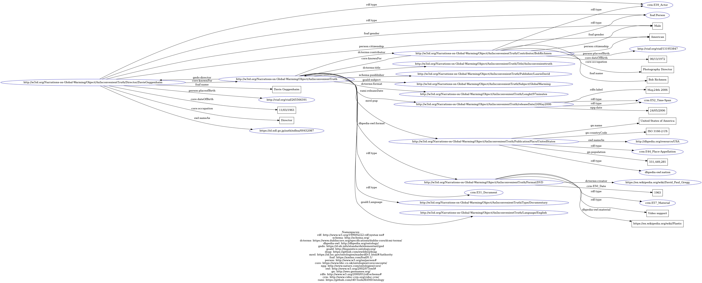

CSV Files
After completing the modelling activity, we came back to the items to describe them under the perspective of our conceptual model and chosen ontologies. We produced a table for each item where columns represent triple (subject: expressed in natural language; predicate: in the form of properties taken from the previously selected ontologies; object: expressed in natural language) and rows represent statements.
Truth to Power
| Subject | Predicate | Object |
|---|---|---|
| Truth to Power | mo: release | 2017 |
| Truth to Power | mo:duration | 3 min. 25 sec |
| Truth to Power | mo:genre | Pop |
| Truth to Power | mo:producer | Ryan Tedder and Brent Kutzle |
| Truth to Power | dcterms:language | English |
| Truth to Power | mo: music group | One Republic |
| Truth to Power | mo: publisher | Mosley, Geffen Records, Interscope Records |
| Truth to Power | mo: publishinglocation | Los Angeles |
An Inconvenient Truth
| Subject | Predicate | Object |
|---|---|---|
| An Inconvenient Truth | schema: datepublished | May 24, 2006 |
| An Inconvenient Truth | soma: title | An Inconvenient Truth |
| An Inconvenient Truth | schema:genre | Documentary |
| An Inconvenient Truth | schema: director | Davis Guggenheim |
| An Inconvenient Truth | schema: producer | Laurie David, Lawrence Bender, Scott Z. Burns |
| An Inconvenient Truth | schema: about | |
| An Inconvenient Truth | schema: publisher | Paramount Classics |
| An Inconvenient Truth | schema:countryofOrigin | United States |
| An Inconvenient Truth | schema: duration | 97 minutes |
| An Inconvenient Truth | schema: associatedMedia |
Non c'è più tempo. Come reagire agli allarmi ambientali
| Subject | Predicate | Object |
|---|---|---|
| Non c'è più tempo | schema: abstract | Siamo un pezzo di natura, lo dice la scienza ecologica, e se la natura si degrada anche noi facciamo la stessa fine. |
| Non c'è più tempo | frbroo:R4_is embodied in | |
| Non c'è più tempo | schema:countryofOrigin | Italy |
| Non c'è più tempo | dcterms: title | Non c'è più tempo |
| Non c'è più tempo | mo:publishingLocation | Italy |
| Non c'è più tempo | dcterms:creator | Luca Mercalli |
| Non c'è più tempo | dcterms: language | Italian |
| Non c'è più tempo | schema: datepublished | 9 ottobre 2018 |
| Non c'è più tempo | schema: publisher | Einaudi |
Invenzione
| Subject | Predicate | Object |
|---|---|---|
| P50_has current keeper (is current keeper of) | ||
| P4_has-time-span (is time span of) | ||
| schema: about | ||
| P46_is_composed of (forms part of) |
Dipinto
| Subject | Predicate | Object |
|---|---|---|
| schema:CountryofOrigin | ||
| dcterms: title | ||
| dcterms: Creator | ||
| schema:TemporalCoverage |
Fotografie
| Subject | Predicate | Object |
|---|---|---|
| schema: temporalCoverage | ||
| schema: abstract | ||
| schema: about | ||
| dcterms: creator | Olafur Eliasson | |
| dcterms: title |
Accordi di Parigi
| Subject | Predicate | Object |
|---|---|---|
| Accordi di Parigi | schema:name | Paris Agreement under the United Nations Framework Convention on Climate Change |
| Accordi di Parigi | schema: abstract | Ratification and accession by 55 UNFCCC parties, accounting for 55% of global greenhouse gas emissions. [...] |
| Accordi di Parigi | schema: datepublished | 30 November – 12 December 2015 |
| Accordi di Parigi | mo: publishinglocation | Paris |
E' troppo tardi per fermare il cambiamento climatico?
| Subject | Predicate | Object |
|---|---|---|
| E' troppo tardi per fermare il cambiamento climatico? | soma: title | E' troppo tardi per fermare il cambiamento climatico? |
| E' troppo tardi per fermare il cambiamento climatico? | schema: datepublished | 29 sept 2020 |
| E' troppo tardi per fermare il cambiamento climatico? | schema: duration | 10 min, 06 sec |
| E' troppo tardi per fermare il cambiamento climatico? | schema: associatedMedia |
CEDA Archive
| Subject | Predicate | Object |
|---|---|---|
| CEDA Archive | schema: temporalcoverage | |
| CEDA Archive | schema: about | The CEDA Archive forms part of NERC's Environmental Data Service (EDS) and is responsible for looking after data from atmospheric and earth observation research |
| CEDA Archive | dwc: modified | 2017 |
| CEDA Archive | dwc:istitutionCode | |
| CEDA Archive | schema: datePublished | |
| CEDA Archive | dwc: accessRights | |
| CEDA Archive | dwc: datasetName | Centre for Environmental Data Analysis |
| CEDA Archive | schema: encodingFormat |
Frostpunk
| Subject | Predicate | Object |
|---|---|---|
| Frostpunk | schema: identifier | |
| Frostpunk | schema: datePublished | April 24, 2018 |
| Frostpunk | schema: name | Frostpunk |
| Frostpunk | schema: creator | Jakub Stokalski Michał Drozdowski |
| Frostpunk | schema:genre | City-building, survival |
| Frostpunk | schema:publisher | 11 bit studios |
RDF MODEL
We decided to focus on the documentary “An Unconvenient Truth” because we think that among our items this is the most representative of the concept of narration on Global Warming. Indeed, this documentary was the first "mainstream" narration on the environmental crisis and it played an important role in spreading the awareness on climate change.
Firstly, we minted a URI for each one of the entities of “An Unconvenient Truth" according to w3id.org model. Then, we wrote the RDF triples by following Turtle serialization and identifying prefixes for the adopted ontologies. Finally, we produced a graphical representation of the RDF through “RDF Grapher” (https://www.ldf.fi/service/rdf-grapher).
RDF TEXT
RDF Graph
